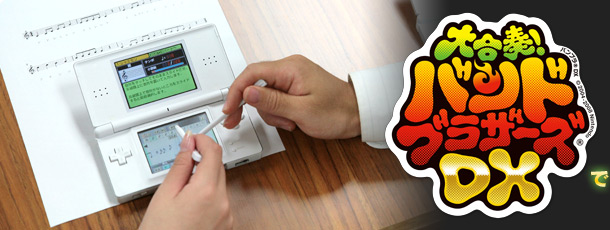
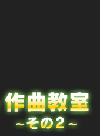
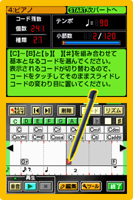
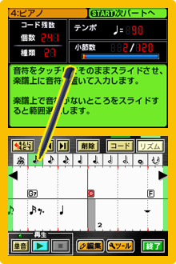
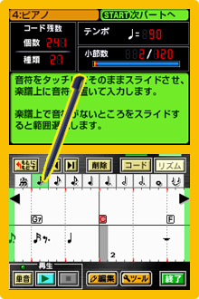

最初はこわごわだった鍵盤作曲も、終わる頃には鼻高々。
調子が出てきたところで、次なるチャレンジは、「本格的作曲」です。
タイトルの通り、音符１つから楽器のチョイスや楽器間の音量調整に至るまで、お好みで本格的な曲作りができてしまいます。
しかも作った曲は100曲まで保存可能ということで、心ゆくまで曲作りを楽しめる仕様です。
前作にも搭載されていた"シーケンサー機能"の大幅グレードアップに、どんな曲が生まれるか楽しみ！
ここでは、『大きな栗の木の下で』からステップアップして、取り扱い説明書の裏についてくる『スーパーマリオブラザーズ ちじょうＢＧＭ（作曲：任天堂株式会社）』の打ち込みに挑戦します。
『スーパーマリオブラザーズ』の１−１で流れる“あの曲”です。
特別にアレンジしたこのバージョンでは全部で５パート（５つの楽器）を使用します。
けれど、操作方法はそれほど難しいわけではないので、ご安心を。
１パートずつ、楽譜の通りに音符を配置すればそれでよし。
まずは主旋律になる「スチールドラム」から入力。ト音／ヘ音記号を選択して打ち込み開始。そこそこ長い楽譜の場合、一小節や二小節ごとに再生すれば、正しいかどうかの確認や「ここまで進んだ！」という自分への励ましになると思われます。


タッチペンだけでなくボタン操作でも入力できます。同じフレーズのところは、コピーと貼り付けを繰り返すと楽ですよ。

以前、久馬の近くで見ていたら、ものすごい速さでボタン入力してました。
♯（シャープ）や♭（フラット）は、音を半音上げたり下げたりする記号です。ですので、音符を置いたあとに「音程▲」や「音程▼」のボタンを押していけば入力できます。（ナチュラル）はそれを元に戻す記号ですから、音符を置けば自動的に入力されます。
やはり鍵盤入力よりは時間はかかりますが、その労力は音の厚みと曲自体の長さに反映されています。
作った曲を一度通して聴いてみれば、感激もひとしお。
見たまま打ち込んで自分が作曲したものではないのに、自分で作った気がして、もしや私って音楽できちゃうのでは？ って勘違いしちゃうんですよ(笑)。
打ち込んだあとに聴くのが一番楽しい瞬間ですよね。
どんどんと他の楽器も追加していきます。
次は和音を用いたピアノのパートです。ちょっと入力する画面が変わったようですが。
上と下に分けて、別々に入力するそうで、まず上半分に入力するコードから、楽譜通りに打ち込みましょう。
和音を使う場合は、画面の上半分にコードを、下半分にそのコードを奏でるリズムを分けて入力します。

 

「オープン」、「タムＬ」… あまりなじみのないカタカナが並びます。
ドラムセットはいろんな楽器が組み合わさってできているので、どの楽器をどのタイミングでならすかを入力していきます。ドラムを入力するときは、ドラムセットの構成を知っておくと便利です。
聴いているだけでは分からない部分も、改めてスゴイなあと感心。
既に知っている曲も、さらに愛着が湧きますよ！
こうやって自分で打ち込んだ楽譜を友達と合奏したり交換したりできるだなんて、ワクワクしますね。
他にも友達の誕生日に好きな曲を打ち込んでみんなで演奏してあげたり、パーティの演出用にプレイリストを作って流してみたり、これをきっかけに自作の曲にチャレンジしてみたりと、音楽を使ったコミュニケーションのアイデアもどんどん出てきそうです。
もしも、自分がゼロから作曲をしたいと思った場合、いったい何をヒントにすれば良いのでしょうか。
「曲を作るぞ！」という気持ちで、既存のさまざまな曲を聴き直してみると、リズムパターンや心地良いメロディを発見できるかなという気もしますが。
私の場合は自転車に乗っていたり、歩いていたりと、一定のリズムで動いているときにふとメロディが浮かびます。人によっていろいろなタイミングがあると思いますよ。
私が鍵盤作曲で作ったオリジナル曲もありますが、適当に作っても、自動伴奏をつければ、それなりに聴こえてしまうのが良いところなんです。
いえ、ちょっと聴かせられませんが(笑)。
あまり目立たせてはいませんが、『バンブラＤＸ』にはエフェクターなどを使って、音をより細かく作り込むこともできますし、触っているだけでも面白いので、いろいろ試してみてください。